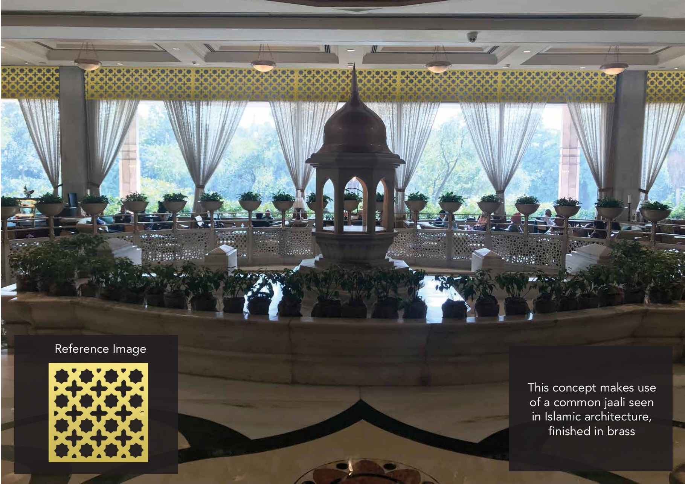
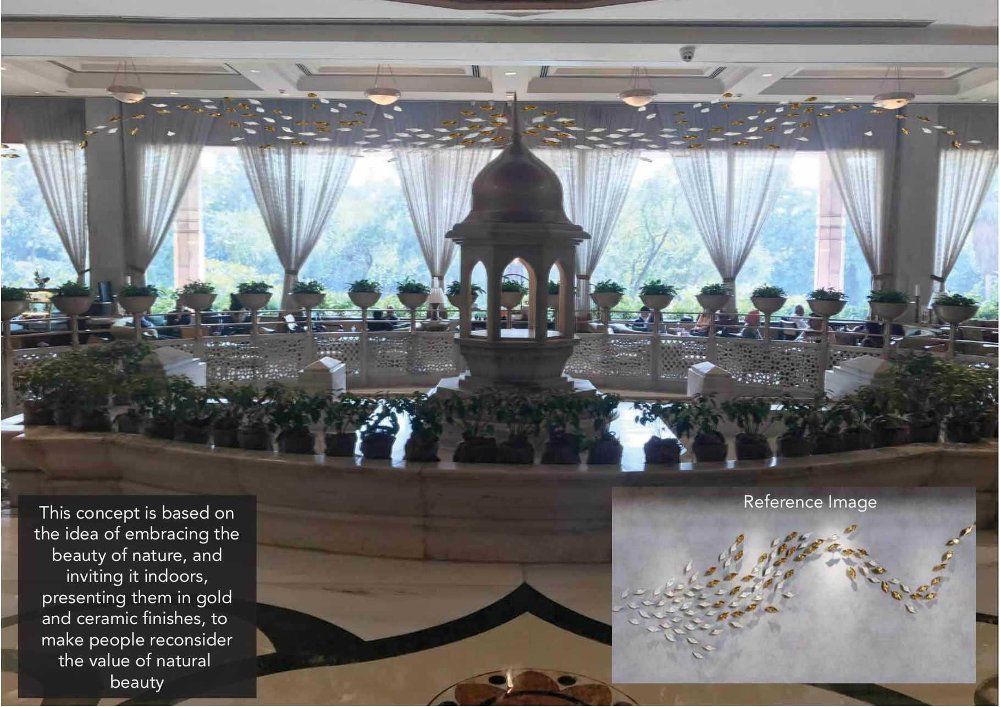
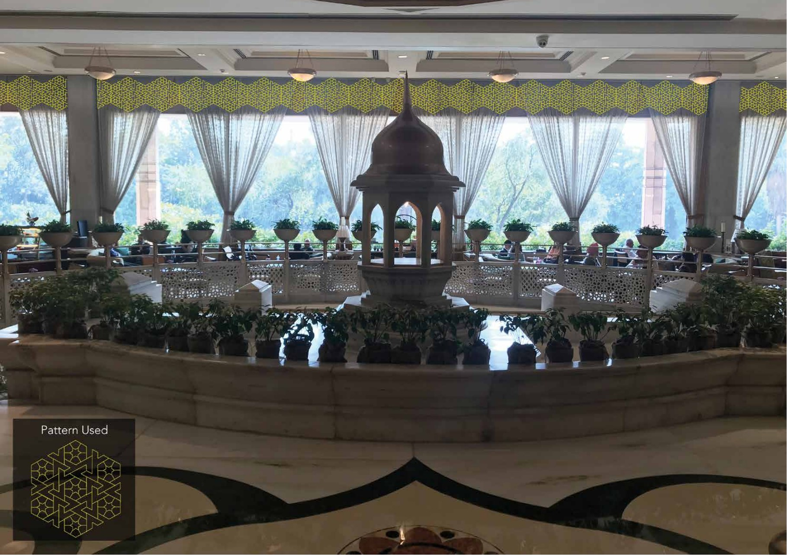
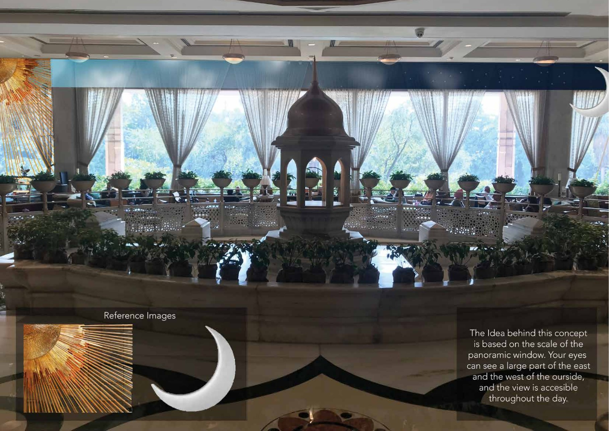
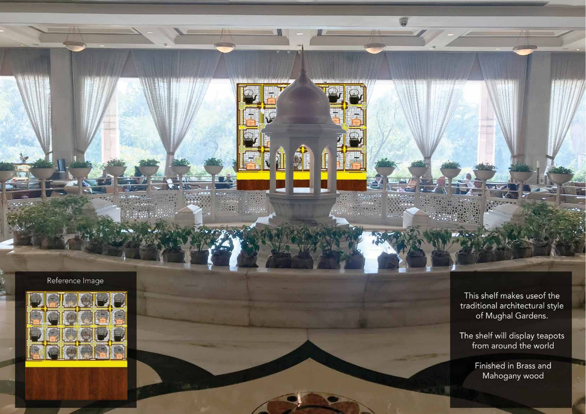
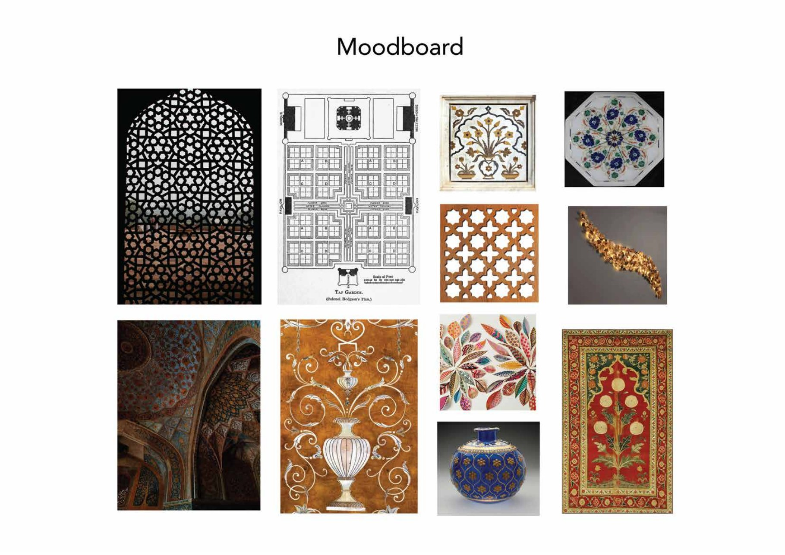
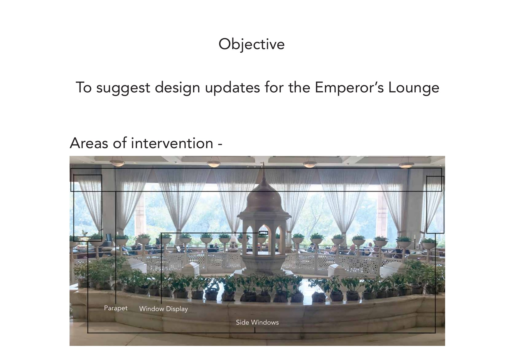

05Concepts — Parapet & Windows







Design-update concepts for the Emperor's Lounge at Taj Mansingh, New Delhi — a suite of proposals for the lounge's parapet and windows, each rooted in Mughal and Islamic craft.

The Emperor's Lounge sits within The Taj Mahal Hotel, New Delhi — a circular room around a marble centre-fountain crowned by a domed chhatri, ringed by panoramic windows onto the gardens. The brief was to suggest design updates for the lounge, concentrated on three zones: the parapet, the window display, and the side windows.
The response was a set of concept proposals — each a complete idea with its own material and symbolic logic, drawn from Mughal and Islamic decorative traditions so that nothing read as ornament applied from outside.
When a room already has a voice, an update has to speak in it.
The lounge carries a strong architectural identity — the marble, the chhatri, the garden light. Each proposal had to sit inside that language and earn its place through craft and reference rather than novelty, continuing the room instead of competing with it.
The vocabulary was set on a moodboard — celadon, laser-cut jali, blue-and-white ceramic, pietra dura floral inlay, the Mughal char-bagh garden, painted urns and carpets. From that base, the parapet and the window band became the canvas for a family of treatments.
Each treatment was rendered onto the room itself, not presented as a swatch — so every proposal could be read in place, against the marble and the light.






Six readings of one room, each in a different Mughal hand.
The concepts ranged across a pietra dura stone-inlay for the parapet; a gold-and-ceramic “nature indoors” flock along the window valance; a brass jaali window band; a green-and-gold geometric pattern band; a panoramic-window concept that turned on the lounge's east-to-west daylight; and a brass-and-mahogany shelf, built in a Mughal-garden architectural style, to display teapots from around the world.
A complete suite of design-update concepts was delivered for the Emperor's Lounge, each carrying its own material and symbolic justification — a vocabulary the room could draw on, zone by zone.
The case study lives here as a page; the PDF is a convenience, not the primary record.